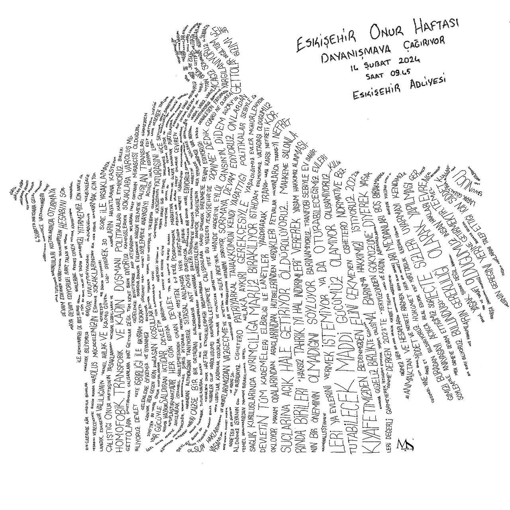

2024-01-31 12:45:00
Eskişehir Onur Haftası Dayanışmaya Çağırıyor!
3. Eskişehir Onur Yürüyüşü için bir araya gelen Hak Savunucuları LGBTİ+’lara uygulanan yasaklara, şiddete ve Nefret suçlarına karşı geçtiğimiz 2023 Temmuz’unda zor kullanılarak gözaltına alınmıştı. Gözaltına alınan 18 Hak Savunucusu hakkında tepeden inme şablon ile hazırlanan iddianame sonucunda dava açıldı. Hak Savunucuların ve LGBTİ+’ların temel hak ve taleplerini kriminalleştirmeye çalışan iktidar suç olmadan suç yaratmaya çalışıyor. Yerel Medyanın, iktidarın maşasına dönüşüp sansasyon yaratarak hazırladığı haberlerin kamuoyuna servis edilmesiyle kolluğun uyguladığı haksız gözaltı kamuoyu nezdinde meşrulaştırılmaya çalışılmıştır.
Eskişehir Onur Haftası Komitesi 14 Şubat 2024 Çarşamba günü saat 09.45’te Eskişehir Adliyesinde görülecek ilk duruşmada hak savunucularıyla dayanışmaya çağırıyor.
#yeryüzündengökyüzüne
#LGBTİHaklarıYargılanamaz
#İnsanHaklarıYagılanamaz
#EskişehirPride
